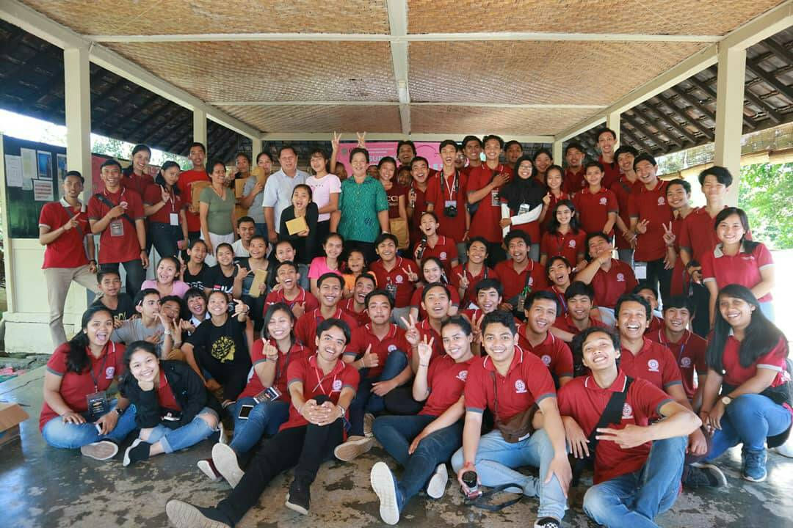

|  |
Kegiatan Charity Rangkaian SupremasiKegiatan charity ini merupakan kegiatan rutin yang dilaksanakan setiap tahunnya pada rangkaian acara SUPREMASI(Hari Ulang Tahun Informatika Unud). Pada tahun 2019, kegiatan charity ini diadakan di Panti Asuhan Salam, Tabanan. Peserta yang terlibat adalah seluruh pengurus HIMAKOM dan beberapa civitas Informatika Universitas Udayanan. |
| Kembali ke Halaman Utama | |